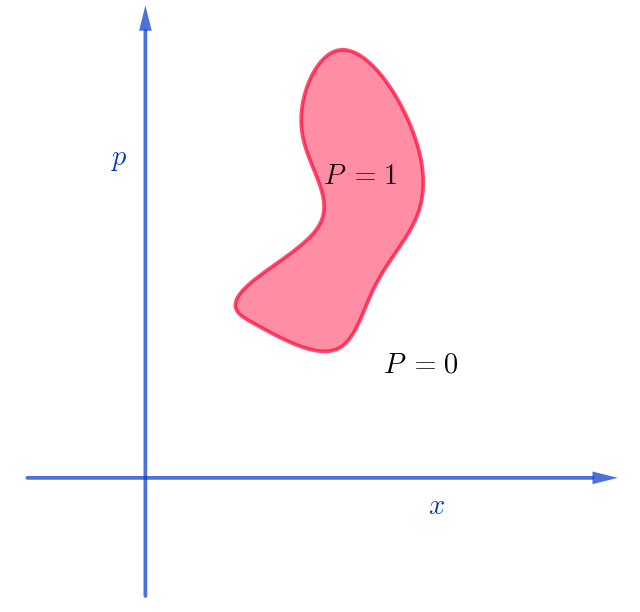
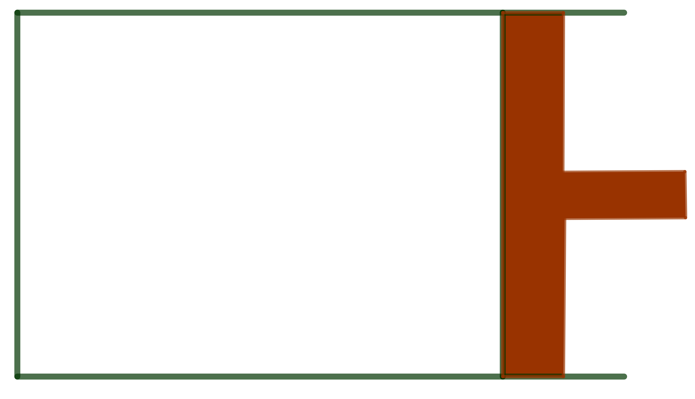
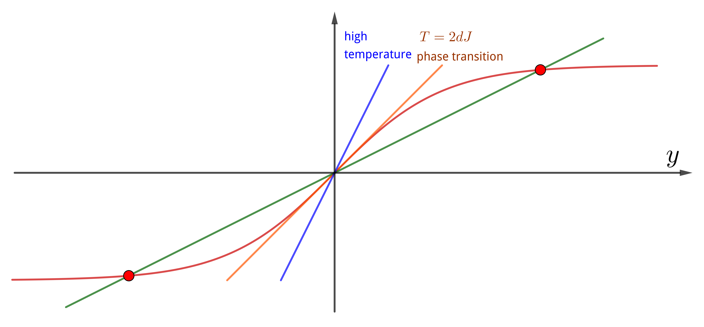
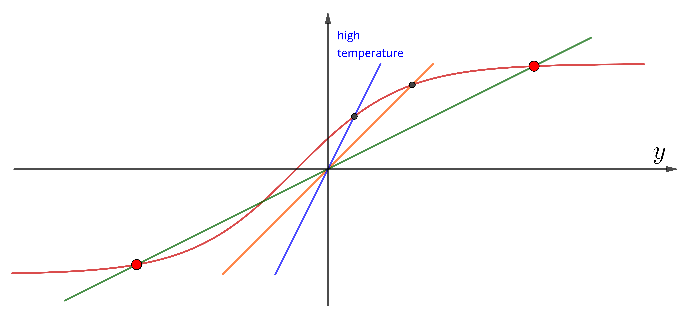
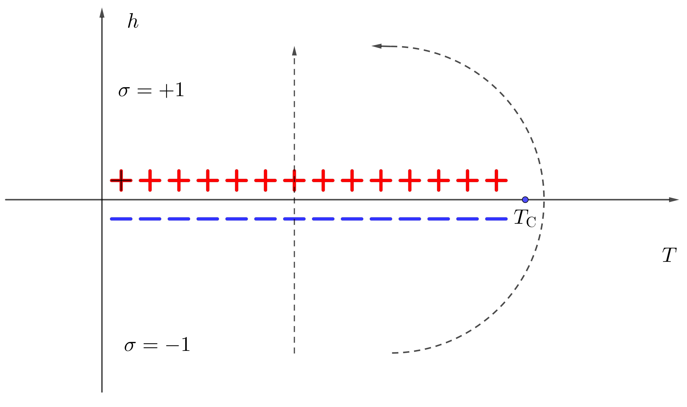

Susskind's Statistical Mechanics
Information
- 官方介绍: https://theoreticalminimum.com/courses/statistical-mechanics/2013/spring
- 视频列表地址: https://www.youtube.com/watch?v
D1RzvXDXyqA&listPL_IkS0viawhr3HcKH607rXbVqy28W_gB7 - 参考 Note: https://www.lapasserelle.com/statistical_mechanics/index.html
- 把主要内容整理一下.
Lecture 1: Entropy and conservation of information
Conservation of Information
一个六面 die, 六个面有不同的颜色 blue, red, green, purple, yellow, orange, 如图
如果它以某种规律运动, 比如下图中红色的箭头

那么无论何时, 发现它处于某一面的概率都是相等的
$$\begin{align} P(i) = \frac{1}{6} \end{align}$$$i$ 代表第 $i$ 面朝上的事件. 如果它按蓝色箭头, 结果是一样的, $P(i) = \frac{1}{6}$ . 又比如, 它按下面的方式运 动

它会有两种状态. 就是说, 它可以处于上面的循环中, 记这个状态为 $+1$ , 那么在这个状 态中, 某个面向上的概率是 $P(+1) = \frac{1}{3}$ , 它永远不会跳到下面的态.
它也可以处下面的态, 记为 $+1$ , 同样的 $P(+1) = \frac{1}{3}$ .
上面的例子都是一些好的运动规律, good laws, 因为它的 infromation conserved. 也就是说, 不论过了多 久, 我们知道系统的信息一样的.
但是也有一些不好的例子, bad laws, 比如下图
它在演化的过程中会 lose information , 这个 information 指初态的 infromation. 比 如一开始处于 orange, 过了一会, 它一定会到 red. 它是不可逆的.
这种 bad laws 在实际的运动中可以对应比如
$$\begin{align} \frac{\mathrm{d}^2x_n}{\mathrm{d}t^2} = -\gamma \frac{\mathrm{d}x_n}{\mathrm{d}t} \end{align}$$它最终的结果是 erery particles come to rest.
conservation of information , minus first law.
Entropy
$N$ is TOTAL number of STATES. 其中 $M < N$ 个态上的占据概率相等, 为 $P=\frac{1}{M}$ , 其它态上的占据概率是 $0$ . 那么定义 entropy
$$\begin{align} S = \log M \end{align}$$Entropy: Measures approximately the number of states which have non-zero probability. The bigger it, the less you know.
In space of states(phase space) of real mechanics, the volume of phase space will stay the same.(Liouville's theorem) i.e. the same number of states.
How to define entropy for a complex probability distribution?
$$\begin{align} S = - \sum_iP(i) \log P(i) \end{align}$$它可以回到简单的情况. 对于 $P(i) = \frac{1}{M}$ , others zero
$$\begin{align} S = -\sum_i \frac{1}{M}\log \frac{1}{M} = \log M \end{align}$$特例, $M = 1$ , $S = 0$ , Complete knowledge, Entropy zero.
Definition of Entropy in Phase Space

如果像上图一样, 概率是均匀的, 那么
$$\begin{align} S = \log V_{PH} \end{align}$$$V_{PH}$ is volume of phase space.
如果概率不均匀, 那么也可以扩展成
$$\begin{align} S = - \int \mathrm{d}p\mathrm{d}x P(p, x) \log P(p, x) \end{align}$$它满足
$$\begin{align} \int P(p, x)\mathrm{d}p \mathrm{d}x = 1 \end{align}$$Lecture 2: Units & Temperature
Units declaration
$c = \hbar = G = k_{\mathrm{B}} = 1$ . Temperature change is a human construct that was invented for convenience.
$$\begin{align} T = k_{\mathrm{B}}t_{\mathrm{K}} \end{align}$$$t_{\mathrm{K}}$ is temperature in Kelvin.
What temperature is?
The average energy in state $i$ which average energy is $E$ is
$$\begin{align} \sum_iP(i, E) E_i = \langle E\rangle \end{align}$$the entropy is
$$\begin{align} S(E) = -\sum_i P(i, E)\log P(i, E) \end{align}$$由于
$$\begin{align} \sum_iP(i, E) = 1 \end{align}$$所以当比较大的 $E(i)$ 概率变大的化, 整个概率分布看起来会更平. 如下图

蓝线到橙线到时红线它们的平均能量 $E$ 是变大的, 同时概率分布变得理平, 意味着 entropy 也增大.
Consider: How much do you have to change the average energy in order to change the entropy by $1$ bit( $\log 2$ )? We define temperature like this
$$\begin{align} \Delta E = \frac{\partial E}{\partial S} \Delta S \end{align}$$ $$\begin{align} \mathrm{d}E = T \mathrm{d}S \end{align}$$It is temperature
下面证明它就是温度, 也就是说两个系统达到热平衡时, 上面定义的温度是相同的.
考虑两个系统 $A, B$ , 初始时它们的温度分别为 $T_A, T_B$ 并且 $T_B > T_A$ . First law says
$$\begin{align} \mathrm{d}E_A + \mathrm{d}E_B =0 \end{align}$$second law says
$$\begin{align} \mathrm{d}S_A + \mathrm{d}S_B > 0 \end{align}$$combine them and use our definition of temperature we get
$$\begin{align} \mathrm{d}S_B =& \frac{\mathrm{d}E_B}{T_B} = - \frac{T_A}{T_B}\mathrm{d}S_A \\ \Downarrow &\\ 0 < & \mathrm{d}S_A + \mathrm{d}S_B = \left(1 - \frac{T_A}{T_B}\right) \mathrm{d}S_A \end{align}$$because $T_B > T_A$ , so
$$\begin{align} \mathrm{d}S_A > & 0\\ \Downarrow &\\ T_A \mathrm{d} S_A > & 0 \\ \Downarrow &\\ \mathrm{d}E_A > & 0 \end{align}$$so energy flowed from B to A.
也就是说能量会从温度高的地方向温度低的地方流动, 也就是说只有温度相同的, 才没有能 量流动, 也就是说达到了热平衡.
Lecture 3: Maximizing entropy
Zeroth law: there is a notion of temperature which way energy flows. Ultimately equilibrium.
A Trick (Canonical Ensemble)
Imagine that the system in question is one of a very large number of identical systems which are connected together by little pipes that allow heat to flow back and forth. One of them is the system we're studying. The rest of them simply provide the heat bath.

We're going to let them get a large number $N$ of them. Large enough that we can think of the heat bath is very big.
Each one of the systems is in a state. Call the number of systems in the $i\mathrm{th}$ state $n_i = (n_1, n_2, n_3, \cdots)$ Constrains
$$\begin{align} \sum_in_i =& N \\ \sum_in_i E_i =& N E \end{align}$$Maximizing entropy
What is the probability that a given one of these systems is in the $i\mathrm{th}$ state? It is
$$\begin{align} P(i) = \frac{n_i}{N} \end{align}$$use this to rewrite the constrains
$$\begin{align} \sum_iP(i) =& 1 \\ \sum_iP(i) E_i =& E \end{align}$$Given the occupation numbers, how many ways of redistributing the states?(most of occupation number is zero) That is
$$\begin{align} \mathrm{Number}\quad \mathrm{of} \quad\mathrm{arrangements} =\frac{N!}{\Pi _in_i!} \end{align}$$use Stirling's Approximation $N! \sim N^Ne^{- N}$ as $N\to\infty$
$$\begin{align} \log\frac{N!}{\Pi _in_i!} \approx& \log \frac{N^N}{\sum_in_i^{n_i}} = N\log N - \sum_in_i\log n_i \\ =& N\log N - \sum_iN P(i)\log [NP(i)] \\ =& - N \sum_i P(i) \log P(i) \end{align}$$It's entropy. If we want to find out the occupation numbers which maximize the number of ways that you can rearrange the system keep the occupation numbers fixed. It simply corresponds to maximizing the entropy.
The most probable distribution of occupation numbers corresponds to probabilities which maximize the entropy.
Lecture 4: The Boltzmann distribution
Partition function
Use Lagrange Multiplier to maximize the entropy
$$\begin{align} F'(P) = - \sum_iP_i \log P_i - \alpha \left[\sum_i P_i - 1 \right] - \beta\left[\sum_iE_iP_i - E\right] \end{align}$$let $\frac{\partial F'}{\partial P_i} = 0$, we get
$$\begin{align} P_i = e^{-(1 + \alpha)} e^{- \beta E_i} \end{align}$$call $e^{-(1 + \alpha)} = Z$ partition function, then
$$\begin{align} P_i = \frac{1}{Z} e^{- \beta E_i} \end{align}$$这个分布是在给定平均能量下最有可能的分布.
so partition function is
$$\begin{align} Z = \sum_i e^{- \beta E_i} \end{align}$$Tuning $\beta$ , tuning average energy. 限制温度相当于限制平均能量.
$E_{i}$ 是系统给定的.
关于 $E, \alpha, \beta$ 之间的关系. $\alpha, \beta$ 是拉氏乘子, 它对应两个约束, 一个是概率归一, 一个是能量给定. 结果就是, 由概率归一和能量给定, 就可以得出 $\alpha, \beta$ . 而概率归一 是永远知道的, 所以剩下的三个量 $E, \alpha, \beta$ 之中给定任何一个, 就可以结合概率归一 得出任剩下的两个, 也就是 $E(\alpha), E(\beta), \alpha(E), \alpha(\beta), \beta(E), \beta(\alpha)$ . 而 $\beta$ 是一个我们非常关心的物理量, 下面将会说明它是温度的倒数, 所以常用的关系就是 $E(\beta)$ 和 $\alpha(\beta)$ , 也就是 $Z(\beta)$ , 因为 $Z$ 和 $\alpha$ 只是做了一个变量替换而已. 得到了 $Z(\beta)$ 就得到了系统所有的其它热力学量.
Average Energy $E$
如果我们知道了 $Z(\beta)$ , 当然可以得到 $E$ , 因为 $E(Z) = E(Z(\beta)) = E(\beta)$ . 也 就是说利用关系 $E(Z)$ , $Z(\beta)$ 得到 $E(\beta)$
$$\begin{align} E = \sum_i P_iE_i = \sum_i \frac{1}{Z(\beta)} e^{-\beta E_i}E_i = - \frac{1}{Z(\beta)}\frac{\partial Z(\beta)}{\partial\beta} = - \frac{\partial}{\partial\beta}\log Z(\beta) \end{align}$$Entropy
$$\begin{align} S = -\sum_i P_i\log P_i \end{align}$$而
$$\begin{align} P_i = \frac{1}{Z(\beta)}e^{-\beta E_i} \end{align}$$so
$$\begin{align} S =& -\sum_i P_i\left[ -\beta E_i - \log Z \right] \\ =& \beta \sum_i P_iE_i + \sum_iP_i\log Z \\ =& \beta E(\beta) +\log Z(\beta) \end{align}$$Temperature
$$\begin{align} \mathrm{d}S = \beta \mathrm{d}E + E \mathrm{d}\beta +\frac{\partial \log Z}{\partial \beta}\mathrm{d}\beta = \beta \mathrm{d}E + E \mathrm{d}\beta -E \mathrm{d}\beta = \beta \mathrm{d}E \end{align}$$so
$$\begin{align} T = \frac{\mathrm{d}E}{\mathrm{d}S} = \frac{1}{\beta} \end{align}$$Summary
$$\begin{align} P_i =& \frac{1}{Z} e^{-\beta E_i} \\ Z =& \sum_i e^{- \beta E_i} \\ E =& - \frac{\partial}{\partial\beta} \log Z \\ T =& \frac{1}{\beta} \\ S =& \beta E + \log Z \end{align}$$Example: the Ideal Gas
在体积 $V$ 内的 $N$ 个粒子. States: collection $x_1, \cdots, x_{3N}, p_1, p_{3N}$ . $6N$ 维的相空间中的每个点对应一个 state. 每个 state 的能量为 $\sum_{n=1}^{3N} \frac{p^2_n}{2m}$ .
$$\begin{align} Z =& \frac{1}{N!} \int \mathrm{d}^{3N}x \int \mathrm{d}^{3N}p\cdot e^{- \beta\sum_{n=1}^{3N} \frac{p^2_n}{2m}} \\ =& \frac{V^N}{N!} \left(\frac{2\pi m}{\beta} \right)^{3N/2} \end{align}$$(因子 $\frac{1}{N!}$ 是因为假设粒子不可分辨, 但对结果无影响)
$$\begin{align} \log Z = - \frac{3N}{2} \log\beta + \mathrm{const.} \end{align}$$ $$\begin{align} E = - \frac{\partial}{\partial\beta}\log Z = \frac{3}{2}NT \end{align}$$Lecture 5: Pressure of an Ideal Gas & Fluctuations
Helmholtz free energy
$$\begin{align} S =& \frac{1}{T} E + \log Z \end{align}$$First define a very useful variable Helmholtz free energy
$$\begin{align} A = E - TS = -T \log Z \end{align}$$Maxwell' Relation
它是一个纯数学的关系. 假设 $E, S$ 和 $T, V$ 是两组独立的变量, 那么
$$\begin{align} \label{eq:maxwell_relation} \left.\frac{\partial E}{\partial V}\right|_S = \left.\frac{\partial E}{\partial V}\right|_T - \left.\frac{\partial E}{\partial S}\right|_V \left.\frac{\partial S}{\partial V}\right|_T \end{align}$$如何理解, 或者说如何证明它?
便于直观地看出它的意义, 我们以独立变量 $T, V$ 为坐标, 画出一条$S$ 的等高线. 也就 是说在这条线上的 $A, B$ 两点, 它的 $S$ 是相等的.

让我们从一个常规的式子出发
$$\begin{align} \Delta E = \left.\frac{\partial E}{\partial V}\right|_T \Delta V +\left.\frac{\partial E}{\partial T}\right|_V \Delta T \end{align}$$上式的第一项和 $(\ref{eq:maxwell_relation})$ 的第一项是相同的. 我们限定它是在 $S$ 不变的这条线上走的, 看它会发生什么. 让两边除以 $\Delta V$ 那么
$$\begin{align} \label{eq:dedv} \frac{\Delta E}{\Delta V} = \left.\frac{\partial E}{\partial V}\right|_T +\left.\frac{\partial E}{\partial T}\right|_V \frac{\Delta T}{\Delta V} \end{align}$$在 $S$ 不变的线上
$$\begin{align} \Delta S = \left.\frac{\partial S}{\partial V}\right|_T \Delta V +\left.\frac{\partial S}{\partial T}\right|_V \Delta T = 0 \end{align}$$那么就可以得到这条线的斜率
$$\begin{align} \frac{\Delta T}{\Delta V} = - \left.\frac{\partial S}{\partial V}\right|_{T} \left/\frac{\partial S}{\partial T}\right|_{V} \end{align}$$把它带到 $(\ref{eq:dedv})$ 里面就得到
$$\begin{align} \frac{\Delta E}{\Delta V} =& \left.\frac{\partial E}{\partial V}\right|_T -\left.\frac{\partial E}{\partial T}\right|_V \cdot \left.\frac{\partial S}{\partial V}\right|_{T} \left/\frac{\partial S}{\partial T}\right|_{V} \\ =& \left.\frac{\partial E}{\partial V}\right|_T - \left.\frac{\partial E}{\partial S}\right|_V \left.\frac{\partial S}{\partial V}\right|_T \end{align}$$在 $S$ 不变的线上, $\frac{\Delta E}{\Delta V}$ 就是 $\left.\frac{\partial E}{\partial V}\right|_S$ . 所以问题得证.
Pressure & Adiabatic
考虑一个系统体积可变, 如下图, 加一个活塞

此时系统有了两个可以控制的参量, $T$ 和 $V$ . 然后考虑一个 adiabatic 的过程. adiabatic 的意思有两个
- slow. 比如活塞右移, 如果移动的很慢, 那么气体的压强会有对外界的做功, 但是如果突 然右移, 气体还没来得及充满整个容器, 所以就没有对外界做功. adiabatic 意味着很慢, 整个过程中, 系统都始终处于平衡态.
- no energy comes into the system from outside. 也就是说它是绝热的. 活塞右移的过程中, 没有能量注入, 也就是说能量的改变就是压强对外做的功
因此压强可以由上式定义出
$$\begin{align} P = - \frac{\partial E}{\partial V} \end{align}$$但是, 如何体现 adiabatic 这个过程. 其实等熵的过程就是一个 adiabatic 的过程. second law 说熵会增加或者不变. 其中不变的过程就是一个 adiabatic 的过程. 这可以从 量子力学的角度来理解. 整个系统是被限制在一个 box 中, 那么它的能级将会是分立的. 而我们绝热地右移活塞, 它们的能级会改变, 但是不会交叉, 还是各自保持独立, 如下图 file:2021-03-11-physics-SusskindsStatisticalMechanics/adiabatic_quantum.png 也就是说如果系统原来处在某个能级上, 它还是在某个能级上. 进一步说, 就是它的处在某 个能级上的概率不会改变, 它的概率分布不会改变. 而 熵就是概率分布的函数, 所以熵不 会改变.
所以压强的定义就可以写为
$$\begin{align} P = - \left.\frac{\partial E}{\partial V}\right|_S \end{align}$$但是控制 entropy 不是那么容易, 我们容易控制的是温度. 所以根据之前的 $(\ref{eq:maxwell_relation})$ , 它可以写为
$$\begin{align} P = - \left.\frac{\partial E}{\partial V}\right|_S = - \left( \left.\frac{\partial E}{\partial V}\right|_T - \left.\frac{\partial E}{\partial S}\right|_V \left.\frac{\partial S}{\partial V}\right|_T\right) \end{align}$$根据温度的定义, 上式中的 $\left.\frac{\partial E}{\partial S}\right|_V$ 就是温度. 之前我们定义 温度的时候, 是一个 closed system, 它的体积给定, 正好这是里的定义.
因此
$$\begin{align} P = - \left.\frac{\partial (E - TS)}{\partial V}\right|_T \end{align}$$而 $E - TS$ 就是之前定义的 Helmholtz free energy, 这里就可以看出它是很有用的, 它 可以用来求压强.
$$\begin{align} P =& - \left.\frac{\partial A}{\partial V} \right|_T \\ =& \left. T \frac{\partial}{\partial V}\log Z\right|_T \end{align}$$这个定义里的偏导数是给定温度的. 而之前的一节课的热力学量公式中的偏导数实际上就是 导数, 因为那时只有一个独立变量, 我们常取的就是 $\beta$ . 而此时的系统, 多了另外一个 独立变量, 也就是体积. 因此这里对体积求偏导时, 就要注明温度不变.
Example: Ideal Gas
现在就用它来计算一下理想气体的压强! 我们甚至都不需要完全计算出配分函数.
$$\begin{align} Z = \frac{1}{N!}\int \mathrm{d}^{3N}x \mathrm{d}^{3N}p e^{- \beta \frac{p^2}{2m}} = \frac{V^N}{N!} f(\beta) \end{align}$$因为压强是给定 $\beta$ 后, 对 $V$ 的导数, 所以我们不关心 $f(\beta)$ 的形式, 只要知道 $Z\propto V^N$ 就足够了
$$\begin{align} P = T \left.\frac{\partial \log Z}{\partial V}\right|_T = T \frac{N}{V} \end{align}$$这就是理想气体的 equation of state
$$\begin{align} PV = NT \end{align}$$Fluctuation & Heat Capacity
fluctuation is defined as
$$\begin{align} \Delta x \equiv \sqrt{\langle(x - \langle x\rangle)^2\rangle} = \sqrt{\langle x^2\rangle-\langle x\rangle^2} \end{align}$$fluctuation of energy is
$$\begin{align} (\Delta E)^2 = \langle E^2\rangle - \langle E\rangle^2 \end{align}$$其中 $\langle E\rangle$ 就是之前的 $E$ , 可以从 partition function 得到
$$\begin{align} \langle E\rangle = - \frac{\partial \log Z}{\partial \beta} \end{align}$$而 $\langle E^2\rangle$ 可以根据定义来求
$$\begin{align} \langle E^2\rangle = \sum_iP_iE_i^2 = \frac{1}{Z(\beta)}\sum_ie^{- \beta E_i} E_i^2 = \frac{1}{Z}\frac{\partial^2 Z}{\partial\beta^2} \end{align}$$so
$$\begin{align} (\Delta E)^2 = \frac{1}{Z}\frac{\partial^2 Z}{\partial\beta^2} - \frac{1}{Z^2}\left(\frac{\partial Z}{\partial \beta} \right)^2 = \frac{\partial}{\partial\beta}\left( \frac{1}{Z} \frac{\partial Z}{\partial \beta} \right) \end{align}$$而括号中的恰好就是 $- E$ , 那么
$$\begin{align} (\Delta E)^2 = - \frac{\partial E}{\partial\beta} = - \frac{\partial T}{\partial\beta} \frac{\partial E}{\partial T} = T^2 \frac{\partial E}{\partial T} = T^2C_V(T) \end{align}$$where
$$\begin{align} C_V(T) \equiv \left.\frac{\partial E}{\partial T}\right|_V \end{align}$$is heat capacity.
Lecture 6: Weakly interacting gases, heat, and work
考虑分子之间有两体相互作用能
$$\begin{align} E = \sum_n \frac{p_n^2}{2M} + \sum_{n>m}U(|x_n - x_m|) \end{align}$$先考虑两个粒子之间的相互作用能
$$\begin{align} \int \mathrm{d}^3x_1 \mathrm{d}^3x_2 \cdot U(|x_2 - x_1|) = \int \mathrm{d}^3x_1 \mathrm{d}^3(x_1 + x')\cdot U(|x'|) = \int \mathrm{d}^3x_1 \mathrm{d}^3(x') \cdot U(|x'|) = V U_0 \end{align}$$where $\int \mathrm{d}^3x_1 = V$ , $\int\mathrm{d}^3(x') U(|x'|) = U_0$ . 记 $\sum_{n>m}U(|x_n - x_m|) \equiv U(x)$ 那么
$$\begin{align} E = \sum_n \frac{p_n^2}{2M} + \frac{N(N - 1)}{2}VU_0 \end{align}$$计算配分函数
$$\begin{align} Z &= \frac{1}{N!} \int \mathrm{d}^{3N}x\int \mathrm{d}^{3N}p\cdot e^{-\beta\sum_n \frac{p_n^2}{2M}} e^{- \beta U(x)}\\ &= \left(\frac{V^N}{N!}\int \mathrm{d}^{3N}p\cdot e^{-\beta\sum_n \frac{p_n^2}{2M}}\right) \frac{1}{V^N}\int \mathrm{d}^{3N}x \cdot e^{- \beta U(x)} \\ &= Z_0(\beta) \frac{1}{V^N}\int \mathrm{d}^{3N}x \cdot e^{- \beta U(x)} \\ \end{align}$$其中 $Z_0$ 是 ideal gas 的配分函数. 如果相互作用很小, 那么我们可以对它展开, 只取 到一阶项
$$\begin{align} e^{- \beta U(x)} \approx 1 - \beta U(x) \end{align}$$那么
$$\begin{align} \frac{1}{V^N}\int \mathrm{d}^{3N}x \cdot e^{- \beta U(x)} &\approx \frac{1}{V^N}\int \mathrm{d}^{3N}x \cdot [1 - \beta U(x)] \\ &= 1 - \frac{\beta}{V^N} \frac{N(N - 1)}{2} \int \mathrm{d}x_1\mathrm{d}x_2\cdot U(x_1 - x_2) \int \mathrm{d}^3x_{3}\cdots \mathrm{d}^{3}x_N \\ &\approx 1 - \frac{N^2}{2}\frac{\beta}{V^{N - (N - 2)}} U_0 V\\ &= 1 - \frac{\beta N^2}{2V}U_0 \end{align}$$配分函数的对数为
$$\begin{align} \log Z \approx \log Z_0 + \log\left[1 -\frac{\beta N^2}{2V}U_0 \right] \approx \log Z_0 - \frac{\beta N^2}{2V}U_0 \end{align}$$其中利用了 $\log(1 - x) = - x + \cdots$
之后我们可以计算一些热力学量的修正. 比如能量
$$\begin{align} E = -\frac{\partial \log Z}{\partial\beta} = \frac{3}{2}NT + \frac{N^2}{2V}U_0 = \left( \frac{3}{2}T + \frac{\rho}{2}U_0 \right)N \end{align}$$压强
$$\begin{align} P = - \left. \frac{\partial A}{\partial V}\right|_V = T \frac{\partial \log Z}{\partial V} = \rho T + \frac{1}{2}\rho^2U_0 \end{align}$$Lecture 7: Harmonic Oscillators ( & Entropy vs. reversibility)
Single Classical Harmonic Oscillators
考虑如图的单个弹簧
它的 partition function 是
$$\begin{align} Z = \int \mathrm{d}p \mathrm{d}x\cdot e^{-\beta \frac{p^2}{2m}} e^{-\beta \frac{kx^2}{2}} = \frac{2\pi}{\omega} \frac{1}{\beta} \end{align}$$where $\frac{1}{\omega} = \sqrt{\frac{m}{k}}$ . so
$$\begin{align} \log Z = \sharp - \log \beta \end{align}$$and
$$\begin{align} E = - \frac{\partial \log Z}{\partial\beta} = T \end{align}$$Single Quantum Harmonic Oscillators
量子与经典不同的地方仅在于能级是分立的(Susskind 在此没有计入零点能). So partition functino is
$$\begin{align} Z = \sum_n e^{- \beta n\hbar\omega} = \sum_n \left(e^{-\beta\hbar\omega} \right)^n = \frac{1}{1 - e^{- \beta\hbar\omega}} \end{align}$$so
$$\begin{align} E = - \frac{1}{Z}\frac{\partial Z}{\partial\beta} = \frac{\hbar\omega e^{- \beta\hbar\omega}}{1 - e^{- \beta\hbar\omega}} \end{align}$$as $\beta \to 0$ (high temperature), the leading order of energy behaves like
$$\begin{align} E \to T \end{align}$$which is the result of classical case. as $\beta \to\infty$ (low temperature), the leading oreder of energy behaves like
$$\begin{align} E \to \hbar\omega e^{- \beta\hbar\omega} \end{align}$$it exponentially goes to zero.
Lecture 8: Magnetic & 1D Ising Model (Entropy, reversibility, and magnetism)
Consider 1 D spin chain, $N$ spins can be either $\sigma(i)= + 1$ or $\sigma(i) = -1$.
Suppose there is a magnetic field, the energy is
$$\begin{align} E = (n - m) \mu H \end{align}$$where $n$ is the number of ups, $m$ is the number of downs, and satisfy $n + m = N$ . So partition function
$$\begin{align} Z = \sum_{n, m}e^{-\beta \mu H(n - m)} \end{align}$$where sum is meant over all configurations. For each value of $(n−m)$ , there is going to be a certainnumber of configurations. And that number of configurations is
$$\begin{align} \frac{N!}{n! m!} \end{align}$$so
$$\begin{align} Z = \sum_{n}\frac{N!}{n! (N - n)!} \left(e^{-\beta\mu H}\right)^n \left(e^{\beta\mu H}\right)^{N - n} = (e^{-\beta\mu H} + e^{\beta\mu H})^N \end{align}$$(The sum in the partition functions is over microstates. If there is degeneracy, we need to multiply a degeneracy factor). And we rewrite the partition function
$$\begin{align} Z = 2^N \cosh^N (\beta \mu H) \end{align}$$Define magnetization as
$$\begin{align} M = \frac{\langle n - m\rangle}{N} \end{align}$$so
$$\begin{align} M = \frac{E}{\mu H N} = - \frac{1}{\mu H N} \frac{\partial \log Z}{\partial \beta} = -\tanh (\beta\mu H) \end{align}$$It behaves like
There is no phase transition.
Lecture 9: The Ising model & Phase transition
1D case
Let's use new notion
$$\begin{align} E = - \mu B \sigma \equiv -J \sigma \end{align}$$(He changed $H$ to $B$ and changed the direction of magnetic field!) so the solution is
$$\begin{align} \langle \sigma\rangle = \tanh (\beta J) \end{align}$$现在考虑不加磁场了, 但是考虑相邻的 spin 之间有相互作用能, 也就是说能量为
$$\begin{align} E = -J \sum \sigma_i \sigma_{i + 1} \end{align}$$for $J > 0$ , spin parallel is favored(lower energy).
Now we define correlation function as
$$\begin{align} \langle \sigma_i \sigma_{i + n}\rangle \end{align}$$and we call $\sigma_1\sigma_2 = \mu_1 \sigma_2\sigma_3= \mu_2, \cdots$ . So
$$\begin{align} E = -J \sum \mu_i \end{align}$$it has the same form of 1 dimension Ising model without interaction energy in a magnetic field. So we can right now get
$$\begin{align} \langle \mu \rangle = \tanh \beta J \end{align}$$We can calculate correlation function by add some pairs in it (because $\sigma_i \sigma_i =1$ )
$$\begin{align} \langle \sigma_i \sigma_{i + n}\rangle = \langle \sigma_i \sigma_{i + 1}\sigma_{i + 1} \sigma_{i + 2}\sigma_{i + 2}\cdots \sigma_{i + n - 1}\sigma_{i + n-1}\sigma_{i + n}\sigma_{i + n}\rangle = \langle\mu_1 \mu_2 \cdots \mu_n \rangle = \tanh^N\beta J \end{align}$$the last equivalent is because differnt $\mu_i$ is independent.
So, it is a boring system, because the correlation function decays when increase the distance except temperature is zero which $\tanh \beta J = 1$ . It is the same idea of the game of telephone. The signal decays.
Why it is borig? because its dimension is too low. We will see in 2 dimension, there will be something like error correction.
High Dimension Case & Mean Field Approximation (Self-Consistent Field)
In $d$ dimension, there are $2d$ neighbors. Mean field means we approximate the neighbor spin as the average spin which labeled as $\bar{\sigma}$. So the energy in a site is
$$\begin{align} E = -J \sigma \sum_{\mathrm{neighbor}} \sigma \approx -\left(2 d J \bar{\sigma}\right) \sigma \end{align}$$the higher the dimension, the better the approximation is. It seems like if one neighbor pass the information wrong, there are other neighbors may pass it right, the more the neighbors, the larger the chance which pass the information right.
This approximation is also called self-consistent field, because we can write the average spin as the form (just transform $J \to 2 dJ\bar{\sigma}$)
$$\begin{align} \bar{\bar{\sigma}} = \tanh(2 \beta d J \bar{\sigma}) \end{align}$$we can solve it consistently, so the name. We write it in another form (let $\bar{\bar{\sigma}} = \bar{\sigma}$)
$$\begin{align} T \frac{y}{2dj} = \tanh y, \quad \mathrm{where} \quad y = 2\beta d J \bar{\sigma} \end{align}$$
直线的斜率与 $T$ 是成正比的. 可以发现, 当温度很高时, 比如图中蓝线, 它与 $\tanh y$ 只有 $y = 0$ , 也就是 $\bar{\sigma} = 0$ 一个交点, 没有磁性, 所有的 spin 都随机排 序.
当温度降低到 $T = 2d J$ , 也就是图中橙色直线时, 它与 $\tanh y$ 相切. 只要温度再 降一点, 到 $T < 2d J$ 时, 就有三个交点分别在 $y < 0, y > 0$ 以及 $y = 0$ 处. 从能量 上看, $y > 0, y < 0$ 的两个解能量是相同的, 并且都要比 $y = 0$ 时的解要低. 也就是 说系统是有磁性的.
The temperatureT= 2dj, where a transition appears, iscalled thecritical temperature. It is not exact. It is a meanfield approximation.
+ External Magnetic Field $B$
如果加上外磁场, 那么 Energy is
$$\begin{align} E = -[2 d J \bar{\sigma} + B]\sigma \end{align}$$and
$$\begin{align} T \frac{y}{2 d J} = \tanh (y + B\beta) \end{align}$$there is just a shift.

此时所有温度都是有确定的磁性.
The tiniest little bit of stray magnetic field $h$ will tell us which way to go. If $h is positive the magnetization will be positive. Right above the $T$ -axis it won’t be zero, and right below it won’t be zero either. Spontaneous magnetizationhas happened.
Lecture 10: Liquid-Gas Phase Transition
Phase Diagram of Ising Model
我们对带有外场
$$\begin{align} E = -J \sum_{\mathrm{links}}\sigma(i)\sigma(j) - \sum_{\mathrm{sites}}h \sigma(i) \end{align}$$的情况做一个总结, 从能量上看, parallel, ups 的能量比较低. 用 mean field 近似的 结果是
$$\begin{align} \bar{\sigma} = \tanh \left[(2 d J \bar{\sigma} + h)\beta \right] \end{align}$$
沿不同的路径来看这个相图:
- 沿 $h = 0$ 来看, 在 $T < T_{\mathrm{C}}$ 时, 它只有两个简并的解, 也就是说它是 有磁性的, 随着温度的升高, 磁性减小, 直到跨过 $T = T_{\mathrm{C}}$ (The phenomena happening there are all characterized bywhat is calledcritical exponents), 磁性消失.
- 在 $T=0$ 的轴上, 当 $h < 0$ 时, $\sigma = -1$ . 当 $h>0$ 时, $\sigma = +1$ . That comes from the fact thatat zero temperature the spins all choose the lowest energy,and there is no fluctuation.
- 沿 $T < T_{\mathrm{C}}$ 的某个温度, 逐渐增大磁场, 也就是图中的虚直线. 在 $h < 0$ 时, 它有一个 shift, 有 $\sigma < 0$ 的解. 随着 $h\to 0$ , 磁性减小, 但是没有减小 到 $0$ , 然后一个突然的转变, 变到 $\sigma > 0$ . $h > 0$ 并逐渐增大时, 磁性以开始 增强.
- 如果我们沿图中半圆虚线, 它绕过了 $T_{\mathrm{C}}$ , 此时 $\sigma$ 连续地由负变到零, 再变到正.
When we talk strictly about real magnets,Tcis also calledthe Curie temperature.
Liquid-Gas Phase Transition
可以用 Ising model 做为一个简单的数学模型, 来 show liquid-gas phase diagram.
liquid gas transition 的发生需要三个条件:
- 有一个可变的 chemical potential (Note that $\mu$ is called the chemical potential because in gen-eral it is different for different kinds of molecules.)
- 有一个 hard core potential
- 有一个 short range attraction potential
如果我们把 Ising model 中 up 看成是存在一个粒子, down 看成是没有粒子. 两个邻近的 spin parallel 是一个 unbroken bound. 那么有外加磁场的 Ising model 恰好就满足这三 个条件. 下面考虑二维 $d=2$ 的情况.
- chemical potential 对应外加磁场再加一个 shift. chemical potential 就是增加一个 粒子的 energy cost. 我们从真空, 也就是 all down 状态增加一个粒子, 也就是 flip a down to up, 它会打开四个 bound, 同时加上外磁场的能量 , energy cost 就是 $8 J + 2h$ . 故 chemical potential $\mu = 8J + 2h$
- $\sigma$ 只能是 $\pm 1$ , 不能是其它数值, 也就是说一个 site 是能是没有粒子, 或者有 一子的状态. 而不能有多个粒子, 也就是对应一个 hard core potential
- 两个相距比较远的粒子, 它们的总能量是 $2(8J + 2h)$ . 而它们互相接近, 直到邻时, 它们会形成一个 bound , 也就是对应它们是 parall 的, 能量会减少 $4J$ . 这就对应 一个 short range attraction potential.
在此对应下, 我们可以用 Ising model 的相图来理解 liquid-gas phase transition. 这 个 transition 对应 $\sigma$ 的突变, 也就是 density 的突变. The difference between liquid andvapour is some discontinuity in the density, liquid beingdenser than vapor.

We want to keep the molecular properties fixed, thereforewe are not going to play with $J$. All we can vary is the chemical potential. And that is the same thing in our model as varying $h$ .
Interlude
Stirling's Approximation
$$\begin{align} N! \approx N^N e^{-N} ,\quad \mathrm{as}\quad N\to\infty \end{align}$$Proof: as $N \to \infty$
$$\begin{align} \log (N!) = \sum_{x = 1}^N \log x \approx \int_1^N \mathrm{d}x\cdot\log x \approx N \log N - N \end{align}$$Q.E.D.
Lagrange Multiplier
另一种不同的理解方式, 不是找 constrain 的切线, 而是 shift了 $F$ 使得 $F(G)$ 在零 处有极值.
具体来讲, function $F(x_i)$ , constrain $G(x_i) = 0$ , 那么在 $x_i$ (如 $x_1 = x, x_2 = y$ 时只有两个变量)平面内, $F(x_i)$ 是一圈一圈的等高线, $G(x_i)$ 也有一系列等 高线. 极值点处两条等高线相切, 在它们的垂线上 $F$ 可以做为 $G$ 的函数, 但此函数在 $G=0$ 处不一定是极值点. 但我们可以变换一下令 $F' = F +\lambda G$ 使得 $G = 0$ 处为 $F'$ 极值点, 得出 $x_i$ 后再 令 $G(x_i) = 0$ 解出 $\lambda$ .
Exp.
$$\begin{align} F(x, y) =& \frac{x^2 + y^2}{2}\\ G(x, y) =& x + y - 1 = 0 \\ \end{align}$$...about
我之前一直很模糊, 不清晰的概念, 都跟 Susskind 搞明白了. 比如什么是 adiabatic, 为 什么压强要在等熵下定义.
Susskind, U GREAT!